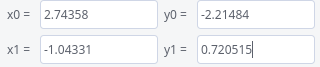
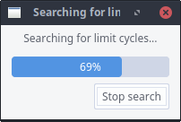

Once you enter in this window, you will be allowed to search
for non semi-stable limit cycles up to a certain degree of precision. You need
to introduce two points forming a transverse segment such that you suspect the
existence of one (or several) limit cycle(s) cutting it. You may do it with
your mouse by simply clicking with the left button on one of the endpoints of the segment
that you one to select, move with the mouse while keeping the mouse button clicked and
releasing the mouse at the other endpoint.
-
The input fields

will allow you to enter the two endpoints of the segment of coordinates (x0,y0)
and (x1,y1) from your keyboard (or modify the values selected with
the mouse).
-
The input determines the precision up to which the limit
cycles will be determined. That is, if two consecutive limit cycles (one stable and
another unstable) cut the selected segment in two points separated more than this
value, then the program will detect them. Otherwise, it may fail in detecting one,
or even both.
-
The integer input
 determines the number of
integration steps that the Runge-Kutta 7/8 method will calculate at every orbit
starting with initial conditions in a point of the segment. If the orbit has not crossed
the line defined by this segment at this time, the program will consider that the
orbit does not cut again the segment. You may note that this default number is bigger
than
determines the number of
integration steps that the Runge-Kutta 7/8 method will calculate at every orbit
starting with initial conditions in a point of the segment. If the orbit has not crossed
the line defined by this segment at this time, the program will consider that the
orbit does not cut again the segment. You may note that this default number is bigger
than  in the
Parameters of Integration window. We suggest to keep
it around this value or even bigger since you may find very slow limit cycles which would
remain undetected with low values. In fact you may get an approximate idea of which
number you should enter by studying the integration of an orbit close to the limit cycle
(in the Orbits window) and estimating how
many steps you have needed to make a complete turn.
in the
Parameters of Integration window. We suggest to keep
it around this value or even bigger since you may find very slow limit cycles which would
remain undetected with low values. In fact you may get an approximate idea of which
number you should enter by studying the integration of an orbit close to the limit cycle
(in the Orbits window) and estimating how
many steps you have needed to make a complete turn.
-
The button will begin the search of the limit cycles. It may
take a bit long, specially if you have selected a segment close to infinity which will be
much longer than it may seem. During the search the dialog box

In case there are some limit cycles found P4 will draw
it with the colour described in the Legend window. In case
that it does not find any limit cycle under the stated assumptions, the control of the
program will return to you once P4 has ended the exploration.
Press the button to cancel the search and return control
of the program immediately.
-
The button will clear the (x0,y0) and (x1,y1) fields.
-
The button will remove the last limit cycle that was found.
-
The button will remove all limit cycles that were previously drawn
on the phase plane.
Note:After you finish searching limit cycles, close the limit cycles window. (Because
its presence causes the mouse click to have a different meaning than the usual meaning of selecting
initial points for orbits.)
 Back to the main page
Back to the main page
 Back to the windows page
Back to the windows page